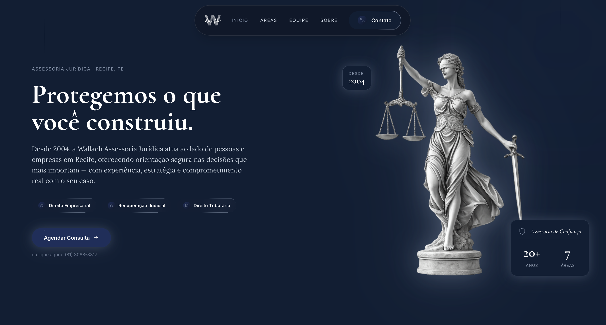
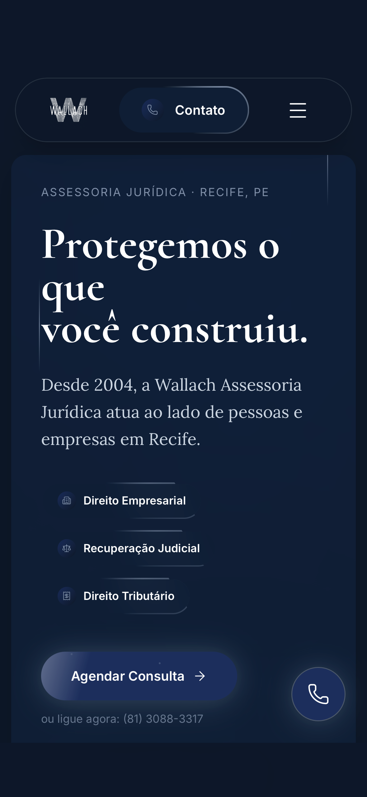

Cliente
Wallach Assessoria Jurídica
Serviço
Criação do Zero
Stack
Next.js · TS · Tailwind
Prazo
14 dias
Setor
Direito · Advocacia
Site ao vivo
AbrirArmando Wallach construiu um escritório sólido ao longo de 20 anos, reputação formada caso a caso, cliente a cliente, em Recife. Mas qualquer pessoa que buscasse a Wallach Assessoria Jurídica online não encontrava nada à altura disso. O escritório atendia por indicação. Quem chegava sem referência prévia, não ficava.
Evitar o "site jurídico padrão": azul genérico, foto de martelo de juiz, juridiquês no texto. 90% dos escritórios do Brasil têm o mesmo site.
Comunicar os 20 anos como diferencial: não como rodapé histórico, mas como argumento central de autoridade.
Converter sem indicação: um empresário buscando assessoria em Recuperação Judicial ou Direito Empresarial precisa sentir segurança antes de mandar a primeira mensagem.
Entendemos o escritório, o público, os concorrentes e o que a Wallach definitivamente não queria ser. Posicionamento antes de pixel.
Paleta, tipografia, iconografia e tom de voz criados do zero para a Wallach. Nenhum componente copiado de template existente.
Desenvolvimento em Next.js com TypeScript. Design, copy e dev na mesma equipe, sem terceirização, sem telefone sem fio.

Paleta
Descartamos o "azul genérico" do mercado jurídico. A base é #0D1829: azul-noite denso, sério sem ser frio. O acento #8090A8 traz distância e classe. O champagne #F0E8D5 comunica tradição.
Identidade Visual
A deusa da Justiça aparece em 90% dos sites jurídicos, como ornamento sem intenção. Aqui ela é a âncora visual da hero: tratada com drop-shadow digital, alta em contraste, posicionada para criar tensão com a tipografia.
Copy
Escrevemos para posicionar o que o escritório não é: "A Wallach não é um escritório de massa." Afirmação negativa que fala diretamente com empresários já queimados por escritórios grandes. Juridiquês zero.
Home
Áreas de Atuação
Equipe
Sobre
Contato
O empresário que vai contratar um advogado pesquisa pelo celular. Avalia, compara e decide na tela pequena, muitas vezes antes de falar com qualquer pessoa. Por isso todo o layout foi construído mobile-first desde o primeiro pixel, não adaptado depois.
Formulário de contato integrado, botão de WhatsApp flutuante, navegação com menu hamburger fluido e tipografia que mantém hierarquia mesmo em 375px.
Páginas
5
todas responsivas
Entrega
14 dias
do zero ao ar

Anos de história
do escritório, finalmente no digital
Páginas entregues
Home, Equipe, Áreas, Sobre e Contato
Áreas de atuação
de Recuperação Judicial a Direito de Família
Prazo de entrega
do briefing ao site no ar
Seu cliente está buscando agora
A MXC Digital constrói do zero: design system exclusivo, stack moderna, copy que posiciona. Sem template, sem terceirização, sem telefone sem fio.